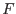
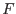

Given two vectors  and
and  containing samples of a function , this subroutine returns the `trapezoidal-rule' estimate of the integral of . In other words, is replaced by the set of piecewise-continuous line segments defined by
containing samples of a function , this subroutine returns the `trapezoidal-rule' estimate of the integral of . In other words, is replaced by the set of piecewise-continuous line segments defined by  and
and  . Note that
. Note that  is assumed to be monotonically increasing - if it isn't, you'll get strange results.
is assumed to be monotonically increasing - if it isn't, you'll get strange results.
interface trapezoidSum
function trapezoidSumSingle(x, y) result(summ)
real(single), intent(in) :: x(:), y(size(x))
real(single) :: summ
end function trapezoidSumSingle
function trapezoidSumDouble(x, y) result(summ)
real(double), intent(in) :: x(:), y(size(x))
real(double) :: summ
end function trapezoidSumDouble
end interface